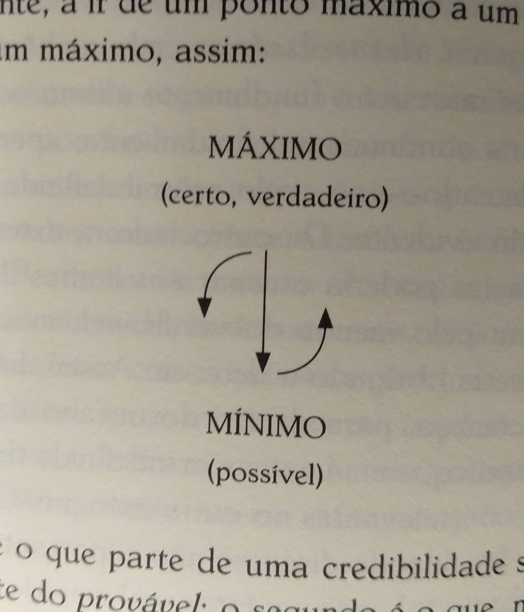
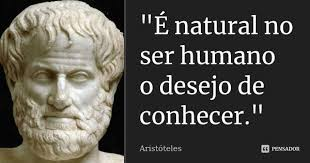
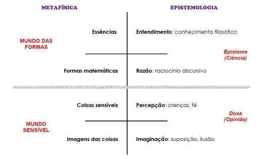
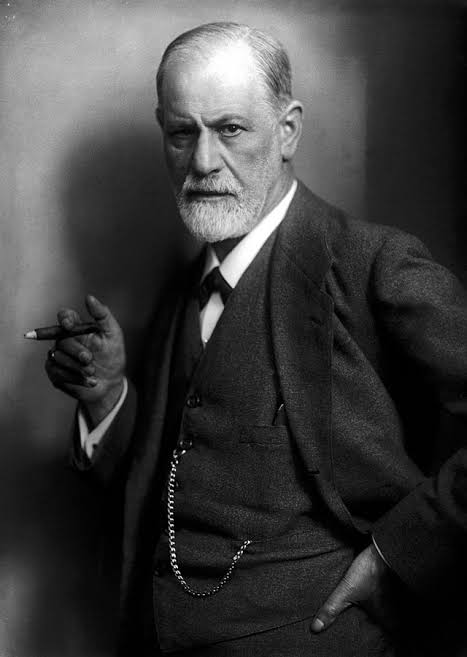
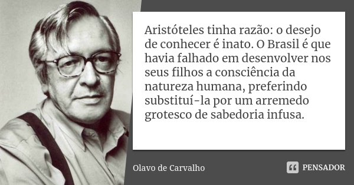

Resumo de Aristóteles em nova perspectiva
-Autor:Eduardo Kenji Takemoto
Terminei de ler o livro Aristóteles em nova perspectiva, do sublime filósofo Olavo de Carvalho, nas próximas linhas há um resumo para quem porventura possa se interessar pela teoria dos quatro discursos explicada a meu modo e tal qual meu entendimento.
Premissa
No livro o autor dá ênfase em quatro livros de Aristóteles: poética (que trata da poética), retórica (que trata da retórica), tópicos (que trata da dialética) e analíticos(que trata da lógica analítica), esses quatro livros de Aristóteles (dois deles fazem parte do Órganon, a saber:analiticos e tópicos) são a base onde se fundamenta a teoria aristotélica dos quatro discursos.

Dos níveis de credibilidade
Essa teoria baseia-se, a priori, na premissa de que nas relações humanas existem 4 tipos de discursos, e, para cada qual, um nível de credibilidade. para medir a credibilidade usa-se a escala de credibilidade, que começa com o discurso poético e vai subindo na ordem de: poético (possível), retórico (verossímil), dialético (provável) e, por fim, analítico (verdadeiro ou, também, apodíctico). O nível máximo na escala é o verdadeiro, já o mínimo:o possível. O grau mínimo não pode ser o falso, pois não inicia-se um discurso sabendo que determinada premissa seja falsa, com exceção de um discurso ad absurdum.
Explicado em forma mais vulgar e simples
A poética busca o possível, mas não o provável ou que pareça verdadeiro. A retórica tenta persuadir o ouvidor a acreditar em uma premissa, fazendo-o pensar que a ideia do orador e a dele são as mesmas. a dialética busca o provável por meio de uma lógica fundada em princípios tidos por certos por muitos, pela maioria, pelos especialistas ou pelos mais influentes(Ex. O homem e a vaca São do mesmo gênero, a saber:animal, mas são de espécies diferentes. a essência de todos os animais é que eles respiram e movimentam-se. o homem é acidentalmente japonês, mas poderia não ser e ainda seria homem). o discurso analítico procura a verdade absoluta(apodíctica) , comumente por meio da ciência.
Da utilidade de cada qual
Olavo logra explicar que todos os discursos são úteis, pois primeiro imaginamos uma ideia possível, depois a tornamos verossímel, depois usamos da lógica dialética para torna-la provável e, por fim, a fazemos verídica pela analítica.
Dialética usada pelo próprio estagirita
Para quem nunca leu Aristóteles, eis um exemplo de dialética retirado do tópicos:
Passaremos agora ao exame das questões que dizem respeito ao gênero e à propriedade. Tais elementos pertencem às questões relativas às definições, no entanto, os dialéticos raras vezes procuram investigar estas coisas por si mesmas.
Se for sugerido um gênero para alguma coisa existente, devemos primeiro considerar todos os objetos que pertencem ao mesmo gênero da coisa mencionada e ver se o gênero sugerido não se predica de uma delas, como acontece no caso de um acidente. Por exemplo, se o "bem" é indicado como o gênero de "prazer", deve-se verificar se algum prazer particular não é bom, porque, se assim acontecer, fica evidente que o bem não é o gênero de prazer, dado que o gênero se predica de todos os membros da mesma espécie. Em segundo lugar, devemos ver se ele não se predica na categoria de essência mas como um acidente, como "branco" se predica da neve ou "semovente" da alma. Com efeito, "neve" não é uma espécie de "branco", e portanto "branco" não é o gênero da neve, nem é a alma uma espécie de "objeto em movimento": o movimento é um acidente seu, como o é muitas vezes de um animal o andar ou estar andando. Consequentemente, "mover-se" não parece indicar a essência, mas antes um estado de atividade ou passividade. E de maneira análoga no que se refere a "branco", pois esse termo não indica a essência da...

Quadro de Platão
Voltando ao tema, Em uma página pode ser visto um quadro muito divulgado na escola de platão onde pode-se fazer diversas analogias com os conceitos dos quatro discursos de Aristóteles.

Ganchos
No livro o autor aproveita o tema para pegar gancho para outros temas, como a péssima cultura literária brasileira, a falta de profissionalismo da sbpc para com ele, o complexo de Édipo da psicanálise de Freud (inclusive, estou no meio de conferências introdutórias à psicanálise, quando terminar talvez faça um resumo como esse) , a escolástica(não me refiro aqui às escolas convencionais, mas a um período da Filosofia Medieval em que a filosofia aristotélica e a junção entre fé e razão ganharam centralidade para explicar os elementos teológicos) ,gnosiologia, entre outros assuntos passíveis de gancho.

Polêmica com a sbpc
Um dos ganchos a que me refiro acima é bem cômico e conta (durante a divisão do livro denominada "Aristóteles no dentista") a história da confusão entre Olavo de carvalho vs CBPC (Compania Brasileira de Produção Científica) dona da revista ciência hoje. em suma, essa confusão com Olavo se resume no fato de que um amigo do Olavo enviou para eles um exemplar do Aristóteles em nova perspectiva antes de lançar a primeira edição do livro para eles publicarem no ciência hoje e, um ano depois, no mesmo dia que começaram a imprimir o livro, ele recebeu o exemplar de volta como negado com um aviso de "sendo um trabalho de odontólogia, encontraria melhor acolhida numa revista especializada.", ao que olavo objeta escrevendo à sbpc que "nem eu nem o próprio Aristóteles tínhamos a menor ideia do interesse dentário das nossas especulações..." e em resposta os revisores escrevem a ele que "foi erro de escrita" e mandam uma lista de "erros cometidos no livro", que olavo rebate demonstrando com veemência serem em totalidade inverídicos (inclusive um dos revisores, ao escrever a resposta, troca apodíctico por apofântico, demasiadas vezes).

Postremo
Ademais, devo esclarecer que eu, quem escreveu este resumo, li o Aristóteles em nova perspectiva, poética e tópicos, mas não li retórica e analíticos. não obstante, não creio ser preciso ler estes para falar da teoria dos quatro discursos já que o próprio olavo já dá um resumo destes e, além disso, não falamos especificamente de cada discurso aqui, mas falamos do montante, passando apenas rapidamente por uma explicação supérflua de cada qual resumidamente, e, quem quiser, pode aprofundar mais lendo-os (a quem está começando a ler filosofia recomendo ler títulos menos complicados como A apologia de Sócrates ou Fédon. Fédon é como uma continuação de a apologia de Sócrates, então primeiro a apologia. Da para encontrar pdfs na internet, e nas bibliotecas escolares deve ter).

Bônus
Fiz um documento com algumas palavras boas para redações que encontrei enquanto lia o livro e coloquei o significado do lado.
link:
clique aqui
Também fiz um documento com partes interessantes do livro.
eis o link:clique aqui